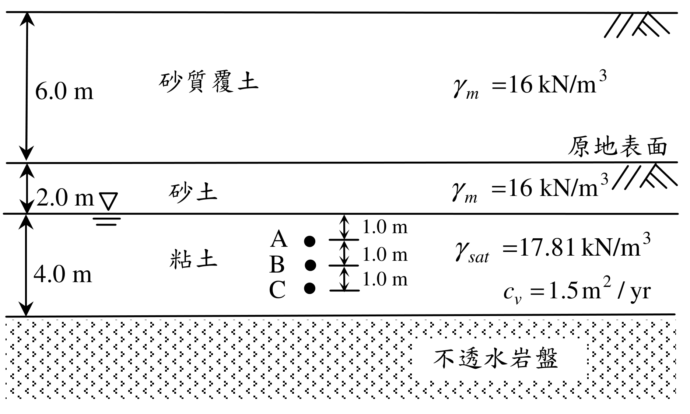
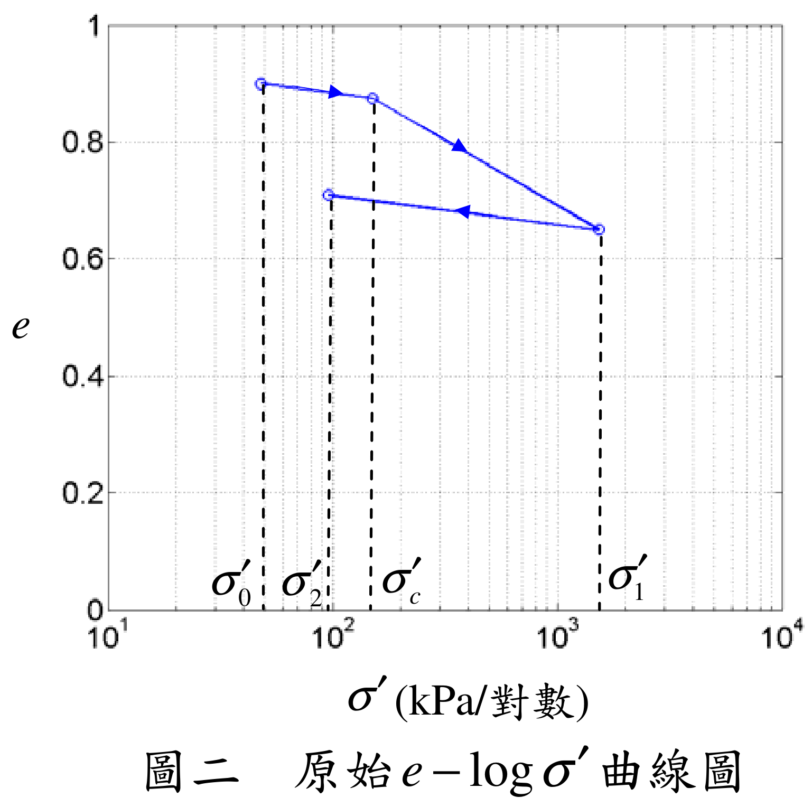
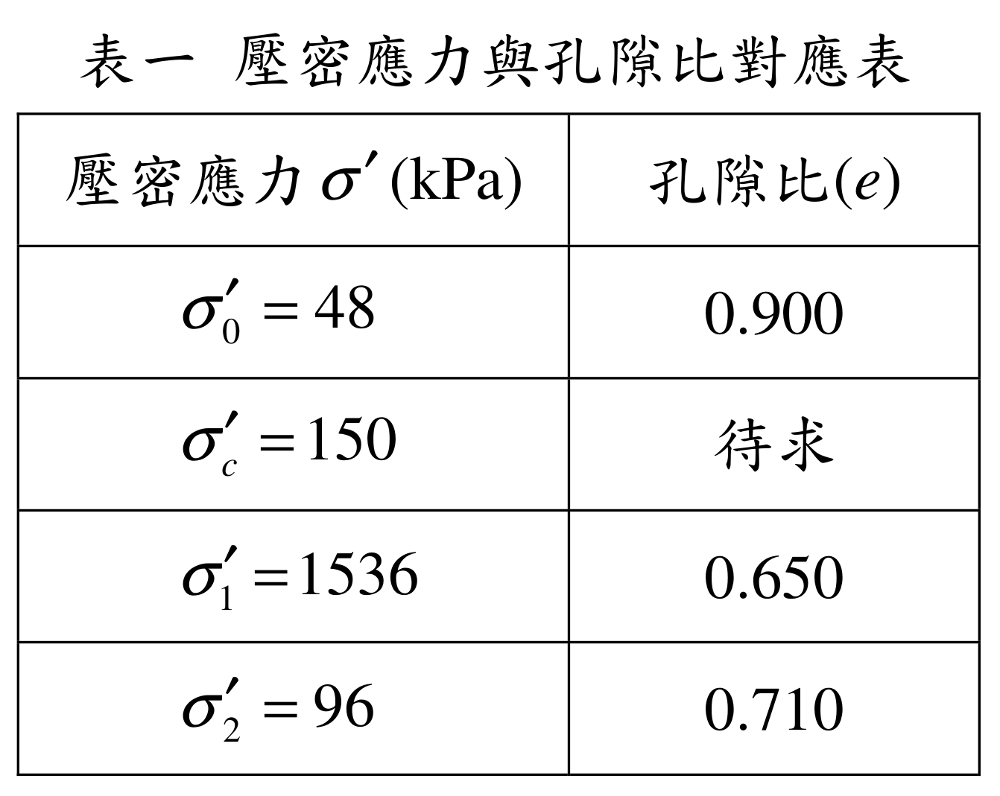
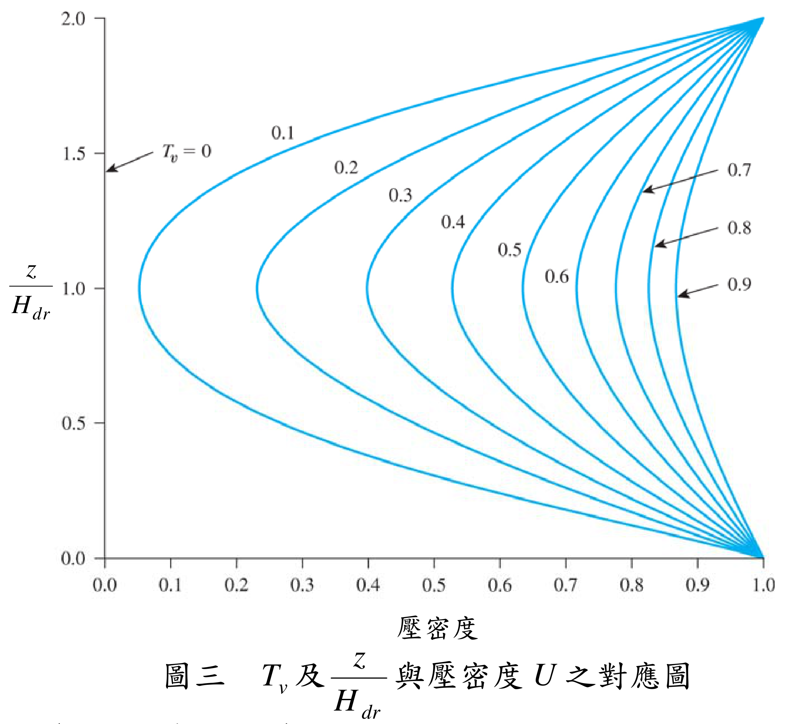
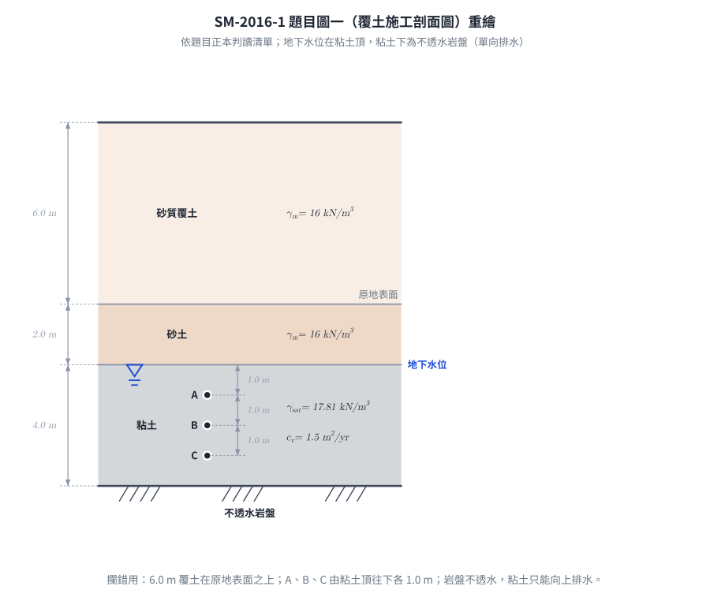
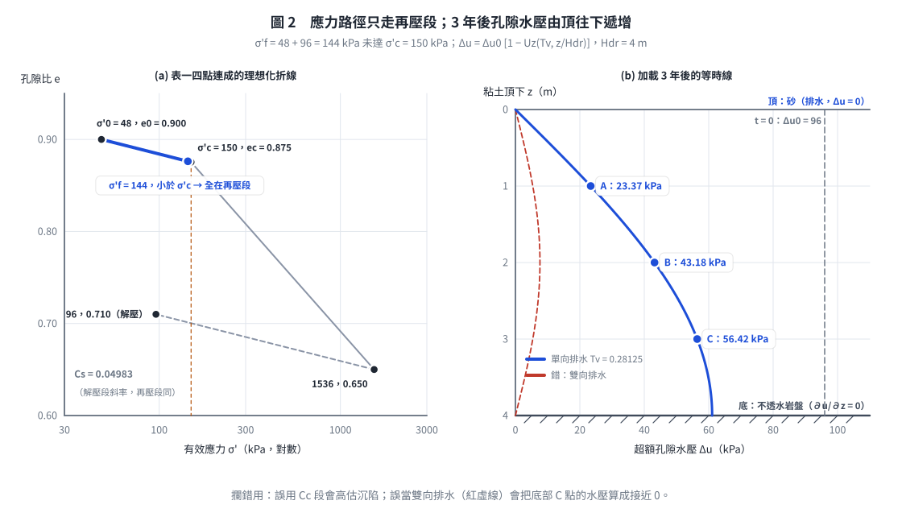

📄 題目正本：考卷原文・附圖・判讀清單（已確認）
SM-2016-1 題目正本
本檔只記錄考卷上寫了什麼、圖上畫了什麼，不含任何解法。解析見同資料夾
SM-2016-1.md。
判讀清單已確認（凍結）；本檔原則上不再修改（改動須回考卷原圖並記 log）。
| 項目 | 內容 |
|---|---|
| 考卷 | raw/exams/SM-2016_土壤力學與基礎設計.pdf 第 1 頁，第一題 |
| 考年 | 民國 105 年（2016） |
| 配分 | 25 分（㈠8、㈡5、㈢12） |
| 附圖 | SM-2016-1-fig-5.png（圖一 覆土施工剖面圖）、SM-2016-1-fig-6.png（圖二 原始 e–log σ′ 曲線圖）、SM-2016-1-fig-7.png（表一）、SM-2016-1-fig-8.png（圖三 Tv 及 z/Hdr 與壓密度 U 之對應圖）；皆 2026-11-15 由考卷重新擷取 500 dpi。既有 SM-2016-1-fig-1.png、SM-2016-1-fig-2.png、SM-2016-1-fig-3.png、SM-2016-1-fig-4.png 為同四張圖，帶滑鼠游標（fig-2 游標壓在曲線 σ′c 附近），保留不刪 |
| 判讀狀態 | 已確認（2026-11-15 關卡一：使用者授權依建議判讀確認；轉錄 2026-11-15；PyMuPDF 110 dpi 全頁目視，圖一 400 dpi、圖二 500 dpi 局部放大並以像素量測；盲讀後才比對既有解析） |
1. 考卷原文（逐字）
一、圖一為某覆土加載施工剖面圖，施工前於地下 4.0 m（點 B 處）取回粘土執行壓密試驗；圖二為壓密試驗結果推算之原始 $e-\log\sigma'$ 曲線，圖三為 $T_v$ 及 $z/H_{dr}$ 與壓密度 $U$ 之對應圖，表一表列原始 $e-\log\sigma'$ 曲線主要加壓與解壓應力對應之孔隙比。
㈠請分析此粘土試樣於 $\sigma'_c$ 時對應之孔隙比 $e$ 及其過壓密比值（OCR）。（8 分）
㈡請分析於此粘土層上加載 6.0 m 砂質覆土 3 年後壓密沉陷量為何？（5 分）
㈢請分析此粘土層上加載 6.0 m 砂質覆土 3 年後，點 A、B 及 C 點之超額孔隙水壓為何？（12 分）
2. 考卷給的公式、附表與參數
- 表一 壓密應力與孔隙比對應表（照錄）：
| 壓密應力 $\sigma'$（kPa） | 孔隙比（$e$） |
|---|---|
| $\sigma'_0=48$ | 0.900 |
| $\sigma'_c=150$ | 待求 |
| $\sigma'_1=1536$ | 0.650 |
| $\sigma'_2=96$ | 0.710 |
- 圖一：砂質覆土 6.0 m、$\gamma_m$ = 16 kN/m³；砂土 2.0 m、$\gamma_m$ = 16 kN/m³；粘土 4.0 m、$\gamma_{sat}$ = 17.81 kN/m³、$c_v$ = 1.5 m²/yr；其下不透水岩盤。
- 圖二：原始 $e-\log\sigma'$ 曲線（橫軸 $\sigma'$（kPa／對數）10¹～10⁴，縱軸 $e$ 0～1），標 $\sigma'_0$、$\sigma'_2$、$\sigma'_c$、$\sigma'_1$ 四點。
- 圖三：$T_v$ 及 $z/H_{dr}$ 與壓密度之對應圖（等時線圖；縱軸 $z/H_{dr}$ 0～2.0，橫軸「壓密度」0～1.0，曲線 $T_v$ = 0、0.1、0.2、…、0.9）。
- 沒有給：$\gamma_w$；$C_c$、$C_s$ 數值（須由表一推算）；平均壓密度 $U$ 與 $T_v$ 的關係式或表（只給圖三的等時線）；$T_v$ = 0.1 間隔以外的等時線。
- 卷首注意事項：㈠可以使用電子計算器。㈡不必抄題，作答時請將試題題號及答案依照順序寫在試卷上，於本試題上作答者，不予計分。
3. 附圖

圖面文字照錄：6.0 m、砂質覆土、γm =16 kN/m³、原地表面、2.0 m、砂土、γm =16 kN/m³、4.0 m、粘土、A、B、C、1.0 m（三處）、γsat =17.81 kN/m³、cv =1.5 m²/yr、不透水岩盤、圖一 覆土施工剖面圖。

圖面文字照錄：e、σ′0、σ′2、σ′c、σ′1、σ′ (kPa/對數)、圖二 原始 e−log σ′ 曲線圖；縱軸刻度 0、0.2、0.4、0.6、0.8、1；橫軸 10¹、10²、10³、10⁴。


圖面文字照錄：Tv = 0、0.1、0.2、0.3、0.4、0.5、0.6、0.7、0.8、0.9、z/Hdr、壓密度、圖三 Tv 及 z/Hdr 與壓密度 U 之對應圖。
4. 判讀清單
| # | 項目 | 判讀 | 圖上／題文依據 | 把握 |
|---|---|---|---|---|
| 1 | $\sigma'_c$ 對應的孔隙比 | 表一寫「待求」；圖二 σ′c 點像素量測 $e\approx0.875$（以 $\sigma'_0$、$\sigma'_1$ 兩已知點校正約 ±0.01）。由 $\sigma'_0\to\sigma'_c$ 段斜率取解壓段斜率（$\sigma'_1\to\sigma'_2$：$0.06/\log16$）推得的值也是 0.875，兩法一致 | 圖二 500 dpi 像素量測；表一 | 不確定（解讀；影響答案極小，使用者授權依建議定案：採「再壓段斜率＝解壓段斜率」推算，圖讀值作核對） |
| 2 | 3 年的等時線 | $T_v$ 不是圖三畫出的 0.1 倍數，圖上無對應曲線；須在相鄰兩條間內插，或用 Terzaghi 級數解（圖三即其圖形） | 圖三只畫 0～0.9 每 0.1 | 不確定（解讀；影響答案讀值精度，使用者授權依建議定案：建議以級數解計算，圖三內插作核對） |
| 3 | 地層與厚度 | 砂質覆土 6.0 m（在原地表面上）、砂土 2.0 m、粘土 4.0 m、其下不透水岩盤 | 圖一左側三條尺寸線，端點對齊各層界線 | 確定 |
| 4 | 地下水位 | 在砂土底＝粘土頂（原地表面下 2.0 m）；▽ 畫在 2.0 m 尺寸線旁，其下雙橫線與粘土頂線同高 | 圖一 400 dpi；且 $2\times16+2\times(17.81-9.81)=48$ 與表一 $\sigma'_0$ = 48 吻合 | 確定（解讀） |
| 5 | A、B、C 位置 | 粘土頂下 1.0 m、2.0 m、3.0 m（三段 1.0 m 尺寸線由粘土頂線往下連續標註） | 圖一 400 dpi | 確定 |
| 6 | 取樣點 | B 點＝原地表面下 4.0 m（砂土 2.0 m＋粘土 2.0 m），與題文「地下 4.0 m（點 B 處）」一致 | 題文、圖一 | 確定 |
| 7 | 排水邊界 | 上為砂土（排水）、下為不透水岩盤 → 單向排水，$H_{dr}$ = 4.0 m | 圖一「不透水岩盤」 | 確定 |
| 8 | 圖三的用法 | 圖三為雙向排水（厚 $2H_{dr}$）的等時線，縱軸 0～2；單向排水層對應其上半 $z/H_{dr}$ = 0～1，$z$ 由排水面（粘土頂）往下量；橫軸「壓密度」為該深度的壓密度 $U_z$（非平均壓密度） | 圖三曲線在 $z/H_{dr}$ = 0、2 處 $U_z$ = 1、對 1 對稱 | 確定（解讀） |
| 9 | 覆土荷重 | 6.0 m 砂質覆土 $\gamma_m$ = 16，大面積加載（一維） | 圖一層線左右延伸；題文 | 確定（解讀） |
| 10 | 圖二加壓路徑 | $\sigma'_0\to\sigma'_c\to\sigma'_1$ 加壓、$\sigma'_1\to\sigma'_2$ 解壓（箭頭方向） | 圖二箭頭 | 確定 |
| 11 | OCR 定義用的應力 | 現地有效覆土壓取表一 $\sigma'_0$ = 48 kPa（B 點） | 表一、#4 驗算 | 確定 |
| 12 | 超額孔隙水壓 | 所求為 3 年時 A、B、C 三點的超額孔隙水壓（不含靜水壓） | 題文 | 確定 |
| 13 | 考卷沒有給 | $\gamma_w$（由 #4 反推為 9.81）；$C_c$、$C_s$ 數值；平均壓密度 $U$–$T_v$ 關係；$T_v$ 非 0.1 倍數的等時線 | 全題 | 確定 |
轉錄：2026-11-15（SM-U1-3 題目正本推廣・批 2）
確認：2026-11-15 使用者授權依建議判讀確認（SM-U1-3 題目正本推廣・批 2，關卡一；使用者指示「要確認的依你建議」）
考題編號：SM-2016-1
主分類： SM-U1-3 土壤夯實及壓密
副分類： SM-U1-4 土體內應力
分析法： 有效應力法
標籤： e-log p'曲線 OCR 過壓密 回脹指數Cs 壓密沉陷 超額孔隙水壓 壓密度 單面排水
1. 題目（考卷原文見題目正本）
考卷原文、公式／附表、附圖與判讀清單（已確認）見
SM-2016-1-problem.md。本節只列解題時最容易讀錯的地方與本解使用的記號；題意以題目正本為準。

重繪自考卷圖一，依題目正本判讀清單 #3–#7；攔下的判讀錯誤：地下水位在粘土頂、A、B、C 由粘土頂往下起算、岩盤不透水而只能向上排水。
常見誤讀
| 項目 | 正確判讀 | 常見誤讀 |
|---|---|---|
| $\sigma'_c$ 的孔隙比 | 表一為「待求」；再壓段斜率取解壓段 $C_s$（$\sigma'_1\to\sigma'_2$）推得 0.875，與圖二讀值一致（題目正本 #1，已確認） | 把 $\sigma'_0\to\sigma'_c$ 段當成 $C_c$ 段，或直接取 0.900 |
| 圖三的用法 | 雙向排水等時線；單向排水層只用上半 $z/H_{dr}$ = 0～1，$z$ 由粘土頂往下量，橫軸是該點的 $U_z$（#8） | 把 $z/H_{dr}$ 讀到 0～2 全範圍，或把橫軸當成平均壓密度 |
| 3 年的 $T_v$ | $T_v$ = 0.281 圖上沒有對應曲線，以 Terzaghi 級數解計算、圖三內插核對（#2，已確認） | 直接取最近的 0.3 曲線 |
| 排水 | 下為不透水岩盤 → 單向排水 $H_{dr}$ = 4.0 m（#7） | 雙向排水 $H_{dr}$ = 2.0 m |
本解記號： $\sigma'_0$ 現地有效覆土壓（B 點）；$\sigma'_c$ 預壓密應力；$C_s\,(\approx C_r)$ 回脹（再壓）指數；$e_c$ 為 $\sigma'_c$ 對應孔隙比；$U_z$ 局部壓密度；$U_{avg}$ 平均壓密度；$\Delta u$ 超額孔隙水壓。（圖二、圖三為曲線圖，表一為表格，不重繪，見題目正本 §3。）
2. 考題核心精神與出題者意圖 (Core Concepts & Examiner's Intent)
- 有效應力與應力歷史： 測驗考生計算原地層有效應力($\sigma_{v0}'$)，並能與室內壓密試驗結果($\sigma_0'$)對接，判斷過壓密比(OCR)。
- 沉陷量計算判別： 測驗考生判斷加載後之最終有效應力($\sigma_f'$)是否超過預壓密應力($\sigma_c'$)。本題 $\sigma_f' < \sigma_c'$，故整體沉陷皆處於「再壓密(Recompression)」階段，必須先從解壓段求得回脹指數($C_s$)，並假定再壓密指數 $C_r \approx C_s$ 進行計算。
- 單面排水與等時線圖讀取： 粘土層上方為砂土、下方為不透水岩盤，構成單面排水條件，排水路徑 $H_{dr} = H = 4.0\text{ m}$。測驗考生如何根據此邊界條件與 $T_v$ 從等時曲線圖(Isochrones)中讀取特定深度的壓密度($U_z$)，進而計算超額孔隙水壓。
3. 解題戰略地圖與陷阱分析 (Strategic Roadmap & Trap Analysis)
-
Step 1: 初始狀態與 OCR 分析
計算 B 點(粘土層中點)之初始有效應力 $\sigma_{v0}'$，並驗證其等同於試驗曲線起點 $\sigma_0'$。再利用 $\sigma_c'$ 計算 OCR。 -
Step 2: 曲線參數推求
利用解壓段($\sigma_1'$ 至 $\sigma_2'$)求得回脹指數 $C_s$。假設 $C_r = C_s$，計算 $\sigma_c'$ 時的孔隙比 $e_c$。 -
Step 3: 最終沉陷量計算
加入覆土載重求得 $\Delta\sigma$ 與 $\sigma_f'$。因 $\sigma_f' < \sigma_c'$，全程使用 $C_r$ 計算極限壓密沉陷量 $S_c$。 -
Step 4: 歷時沉陷與水壓計算
判斷為單面排水($H_{dr}=H=4.0\text{ m}$)，計算 3 年時之 $T_v$。以 $T_v$ 求取平均壓密度 $U_{avg}$ 及各點局部壓密度 $U_z$ (可查圖或代級數解)，最終求出沉陷量及超額孔隙水壓。
⚠️ 陷阱分析：
- 排水路徑長度判斷錯誤： 看到 4.0 m 粘土層直覺代入 $H_{dr}=H/2=2.0\text{ m}$，但底部標示為「不透水岩盤」，應為單面排水 $H_{dr}=4.0\text{ m}$。
- 沉陷量公式選用錯誤： 若未仔細比對 $\sigma_f'$ 與 $\sigma_c'$ 的大小關係，誤用 $C_c$ 計算沉陷，會導致結果大幅高估。
- 查圖座標混淆： 圖表之 $z/H_{dr}$ 座標自頂部起算，單面排水僅對應圖表上半部($0 \le z/H_{dr} \le 1.0$)，若誤解圖表座標系將導致查得錯誤之壓密度。
3.5 變數層次分析 (Variable Hierarchy Analysis)
最終目標
求出粘土層之預壓密孔隙比、過壓密比、加載 3 年後之壓密沉陷量及各深度之超額孔隙水壓
本題關鍵公式（依計算順序）
- 初始有效應力與 OCR：$\text{OCR} = \frac{\sigma_c'}{\sigma_{v0}'}$
- 膨脹/再壓密指數：$C_r \approx C_s = \frac{\Delta e}{\log(\sigma_1'/\sigma_2')}$
- 預壓密孔隙比：$e_c = e_0 - \boxed{C_r} \log\left(\frac{\sigma_c'}{\sigma_{v0}'}\right)$
- 最終壓密沉陷量 (OC 土壤且 $\sigma_f' \le \sigma_c'$)：$S_c = \frac{H}{1+e_0} \boxed{C_r} \log\left(\frac{\sigma_{v0}'+\Delta\sigma}{\sigma_{v0}'}\right)$
- 時間因素：$T_v = \frac{c_v t}{H_{dr}^2}$
- 超額孔隙水壓：$u_z = \Delta\sigma \cdot (1 - U_z)$
L1：題目直接給定
| 符號 | 數值 | 說明 |
|---|---|---|
| $H_{sand}$ | $2.0 \text{ m}$ | 原有砂土層厚度 |
| $\gamma_{sand}$ | $16 \text{ kN/m}^3$ | 原有砂土單位重 |
| $H$ | $4.0 \text{ m}$ | 粘土層厚度 |
| $\gamma_{sat(clay)}$ | $17.81 \text{ kN/m}^3$ | 粘土飽和單位重 |
| $\sigma_0', e_0$ | $48 \text{ kPa}, 0.900$ | 試驗起點之有效應力與孔隙比 |
| $\sigma_c'$ | $150 \text{ kPa}$ | 預壓密應力 |
| $\sigma_1', e_1$ | $1536 \text{ kPa}, 0.650$ | 解壓起點參數 |
| $\sigma_2', e_2$ | $96 \text{ kPa}, 0.710$ | 解壓終點參數 |
| $\Delta\sigma$ | $96 \text{ kPa}$ | 覆土載重 ($6.0\text{ m} \times 16\text{ kN/m}^3$) |
| $c_v$ | $1.5 \text{ m}^2/\text{yr}$ | 壓密係數 |
| $t$ | $3 \text{ yr}$ | 加載時間 |
L2：需知識點推導
應力與曲線參數推導
| 符號 | 公式／來源 | 卡關? |
|---|---|---|
| $\sigma_{v0}'$ | $\gamma_{sand} H_{sand} + (\gamma_{sat(clay)} - \gamma_w) (H/2)$ | |
| $\text{OCR}$ | $\sigma_c' / \sigma_{v0}'$ | |
| $C_r$ | $(e_2 - e_1) / \log(\sigma_1' / \sigma_2')$ | |
| $e_c$ | $e_0 - C_r \log(\sigma_c' / \sigma_0')$ | |
沉陷與孔隙水壓計算
| 符號 | 公式／來源 | 卡關? |
|---|---|---|
| $H_{dr}$ | 單面排水，即粘土層厚度 $H$ | |
| $T_v$ | $c_v t / H_{dr}^2$ | |
| $U_{avg}$ | 查表或公式 $\sqrt{4T_v/\pi}$ (當 $U<60\%$) | |
| $S(t)$ | $S_c \times U_{avg}$ | |
| $U_z$ | 由圖表讀取，或代級數解 | |
| $u_z$ | $\Delta\sigma (1 - U_z)$ | |
L3：深層知識（不懂就卡住）
| 知識點 | 說明 | 卡關? |
|---|---|---|
| 單面排水判斷 | 下方為不透水岩盤，僅能向上單向排水，故 $H_{dr} = H$ 而非 $H/2$。 | |
| 沉陷公式選擇 | 需檢核 $\sigma_f'$ 與 $\sigma_c'$，若 $\sigma_f' \le \sigma_c'$ 則全程落在再壓密段，僅需使用 $C_r$ 即可。 |
4. 步驟化詳細計算過程 (Step-by-Step Detailed Calculation)
(一) 分析粘土試樣於 $\sigma_c'$ 時之孔隙比 $e$ 及 OCR
Step 1: 計算原地層有效應力並確認對應關係
點 B 位於粘土層中點（自地表起算深度 4.0 m 處，粘土層頂部以下 2.0 m）。
- 原有砂土層(厚 2.0 m)在地下水位面上，其自重壓力：$\sigma_1 = 2.0 \text{ m} \times 16 \text{ kN/m}^3 = 32 \text{ kPa}$
- 粘土層(至點 B 厚 2.0 m)在地下水位面下，其有效壓力：$\sigma_2' = 2.0 \text{ m} \times (17.81 - 9.81) \text{ kN/m}^3 = 2.0 \times 8.0 = 16 \text{ kPa}$
- 初始原地層有效應力：$\sigma_{v0}' = 32 + 16 = \mathbf{48 \text{ kPa}}$
此數值與試驗起點 $\sigma_0' = 48 \text{ kPa}$ 完全吻合，確認其對應孔隙比為原地層孔隙比 $e_0 = 0.900$。
Step 2: 計算過壓密比 (OCR)
由表一已知預壓密應力 $\sigma_c' = 150 \text{ kPa}$。
$$ \text{OCR} = \frac{\sigma_c'}{\sigma_{v0}'} = \frac{150}{48} = \boxed{3.125} $$
Step 3: 推求回脹指數與 $\sigma_c'$ 對應之孔隙比 $e_c$
自試驗解壓段($\sigma_1'$ 卸載至 $\sigma_2'$)求得膨脹/回脹指數 $C_s$：
$$ C_s = \frac{e_2 - e_1}{\log(\sigma_1' / \sigma_2')} = \frac{0.710 - 0.650}{\log(1536 / 96)} = \frac{0.060}{\log(16)} \approx 0.04983 $$
合理假設再壓密指數 $C_r \approx C_s = 0.04983$。
計算自 $\sigma_0'$ 載荷至 $\sigma_c'$ 所對應的孔隙比 $e_c$：
$$ e_c = e_0 - C_r \log\left(\frac{\sigma_c'}{\sigma_0'}\right) = 0.900 - 0.04983 \times \log\left(\frac{150}{48}\right) = 0.900 - 0.04983 \times 0.49485 \approx 0.8753 $$
$$ e_c = \boxed{0.875} $$
(二) 加載 3 年後之壓密沉陷量
Step 1: 計算最終有效應力並判斷應力狀態
- 砂質覆土載重：$\Delta\sigma = 6.0 \text{ m} \times 16 \text{ kN/m}^3 = 96 \text{ kPa}$
- 最終有效應力：$\sigma_f' = \sigma_{v0}' + \Delta\sigma = 48 + 96 = 144 \text{ kPa}$
因 $\sigma_f' (144 \text{ kPa}) < \sigma_c' (150 \text{ kPa})$，故加載全程均處於「過壓密狀態(再壓密區段)」。
Step 2: 計算極限壓密沉陷量 $S_c$
將 4.0 m 粘土層視為一單一土層，以中央點 B 之應力代表全層：
$$ S_c = \frac{H}{1 + e_0} C_r \log\left(\frac{\sigma_f'}{\sigma_{v0}'}\right) = \frac{4.0}{1 + 0.900} \times 0.04983 \times \log\left(\frac{144}{48}\right) $$
$$ S_c = \frac{4.0}{1.900} \times 0.04983 \times \log(3) = 2.1053 \times 0.04983 \times 0.47712 = 0.050 \text{ m} = 5.0 \text{ cm} $$
Step 3: 計算時間因素 $T_v$ 與平均壓密度 $U_{avg}$
- 單面排水(下方不透水岩盤)：$H_{dr} = H = 4.0 \text{ m}$
- 時間因素：$T_v = \frac{c_v t}{H_{dr}^2} = \frac{1.5 \times 3}{4.0^2} = 0.28125$
利用公式 $U_{avg} = \sqrt{\frac{4T_v}{\pi}}$ (適用 $U<60\%$) 求平均壓密度：
$$ U_{avg} = \sqrt{\frac{4 \times 0.28125}{\pi}} = \sqrt{0.3581} \approx 0.598 \quad (即 59.8\%) $$
(註：若代入嚴密級數解計算，得 $U_{avg} \approx 59.5\%$)
Step 4: 計算 3 年後沉陷量
$$ S(3\text{年}) = S_c \times U_{avg} = 5.0 \text{ cm} \times 0.598 = \boxed{2.99 \text{ cm}} $$
(三) 加載 3 年後點 A、B、C 之超額孔隙水壓
Step 1: 確定各點深度參數
初始超額孔隙水壓 $\Delta u_0 = \Delta\sigma = 96 \text{ kPa}$。
粘土層單面排水，$H_{dr} = 4.0 \text{ m}$，且上緣($z=0$)為唯一排水邊界。
各點對應之相對深度比例 $z/H_{dr}$：
- A 點：深 1.0 m $\rightarrow z/H_{dr} = 1.0/4.0 = 0.25$
- B 點：深 2.0 m $\rightarrow z/H_{dr} = 2.0/4.0 = 0.50$
- C 點：深 3.0 m $\rightarrow z/H_{dr} = 3.0/4.0 = 0.75$
Step 2: 計算或查圖求取水壓
根據一維壓密理論公式 $u_z = \frac{4}{\pi} \Delta u_0 \sin\left(\frac{\pi z}{2 H_{dr}}\right) \exp\left(-\frac{\pi^2}{4} T_v\right)$，代入 $T_v = 0.28125$ 求得高精度解（亦可自圖表查取 $T_v \approx 0.28$ 之等時曲線得近似解）：
$$ u_z = \frac{4}{\pi} (96) \sin\left(\frac{\pi z}{8}\right) e^{-0.6940} = 122.23 \times 0.4996 \times \sin\left(\frac{\pi z}{8}\right) \approx 61.07 \sin\left(\frac{\pi z}{8}\right) \text{ kPa} $$
-
A 點 ($z/H_{dr} = 0.25$)：
$$ u_A = 61.07 \times \sin\left(\frac{\pi}{8}\right) = 61.07 \times 0.3827 = \boxed{23.37 \text{ kPa}} $$ -
B 點 ($z/H_{dr} = 0.50$)：
$$ u_B = 61.07 \times \sin\left(\frac{\pi}{4}\right) = 61.07 \times 0.7071 = \boxed{43.18 \text{ kPa}} $$ -
C 點 ($z/H_{dr} = 0.75$)：
$$ u_C = 61.07 \times \sin\left(\frac{3\pi}{8}\right) = 61.07 \times 0.9239 = \boxed{56.42 \text{ kPa}} $$
(註：若使用圖表查讀法，此三點之局部壓密度分別約為 $U_A\approx 76\%, U_B\approx 55\%, U_C\approx 41\%$，對應得到水壓約為 $23.0\text{ kPa}, 43.2\text{ kPa}, 56.6\text{ kPa}$)

圖 2 左：應力路徑只走再壓段，攔下誤用 $C_c$ 段而高估沉陷；右：頂部排水、底部不透水，水壓由頂往下遞增，攔下誤當雙向排水（$H_{dr}$ = 2 m）把 C 點水壓算成接近 0。
5. 關鍵爭議點與進階探討 (Critical Issues & Advanced Discussion)
- 查圖法 vs 理論解：本題雖附有 $T_v - U_z$ 等時線圖供考生查閱，但人眼查圖存在內插誤差。實務上與考場上，建議直接採用級數解第一項(當 $T_v > 0.2$ 時極度精確)進行計算，不僅能展現出紮實的理論基礎，亦可避免閱卷者對查圖準確度的疑慮。
- 代表點位置：計算整層沉陷量時，實務規範常要求將厚度較大的土層細分為若干子層(Sublayers)分別計算再加總。但在一般考試中，針對 4 m 厚的土層，採用其中央點(B點)之初始應力作為全層之代表應力是標準且可接受的作法。
修正日期：2026-11-15（§1 改為指向題目正本 SM-2016-1-problem.md，重繪附圖 figs/SM-2016-1-fig-1-problem.svg；§4（一）～（三） 補解題圖解 figs/SM-2016-1-fig-2-path-isochrone.svg（腳本 gen_SM-2016-1.py）；非勘誤）